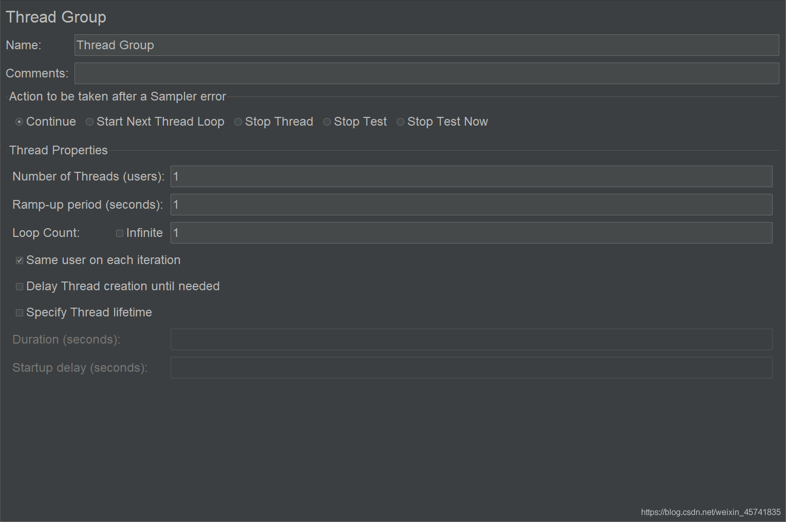
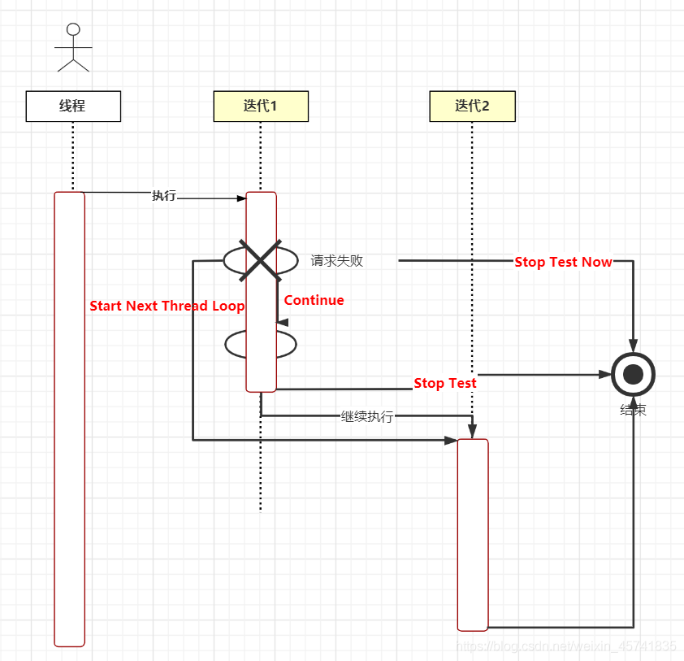
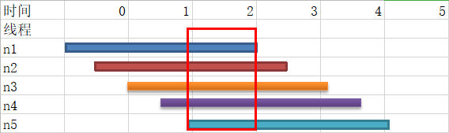
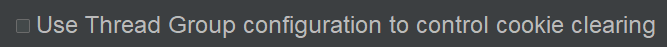

线程组编辑区如下：

有点复杂，但是慢慢看下来，还是比较容易理解。
Name
带有业务含义的名字。
Comments
线程组的备注说明。
Action to be taken after a Sampler error
取样器报错后执行动作。有 5 个选项：Continue，Start Next Thread Loop，Stop Thread，Stop Test，Stop Test Now。为了搞懂这几个选项，我画了张时序图进行说明：

- 图中有一个线程，在最左边。
- 右边有两个迭代：迭代 1 和迭代 2。
- 每个迭代有两个请求，第一个请求失败。
- Stop Thread 是直接结束线程，没有画出来，一般不会设置此项，不然会导致运行线程越来越少，最后负载不够，对服务器的压力不够，测试结果不具参考性。
- 剩余 4 个选项用红色字体标注了出来。
线程在第一个迭代的第一个请求失败了。Continue 表示继续执行第二个请求，再执行第二个迭代；Start Next Thread Loop 表示忽略第二个请求，跳到第二个迭代执行；Stop Test 表示把当前迭代的第二个请求执行完后，停止测试；Stop Test Now 表示从第一个请求失败这里直接结束测试。
**JMeter 默认选项是 Continue，保证足够的并发压力。**我们在大量用户并发时，服务器偶尔响应错误是正常现象，比如服务器由于性能问题 500，此时出错我们正好要记录下来，作为有性能问题的依据。
如果想减少关联请求报错，可以选择 Start Next Thread Loop。
Thread Properties
Number of Threads (users)
线程组的线程数量。
Ramp-up period (seconds)
启动时间，线程组在多少秒内启动完所有线程。
比如设置线程数为 50，设置启动时间为 10 秒，那么每秒就会启动 50 / 10 = 5 个线程；如果设置为 0 秒，则 50 个线程会立刻启动；如果设置为 100 秒，就会每隔 100 / 50 = 2 秒启动 1 个线程。
Ramp-up period 如何设置？
以下是 5 个线程依次从启动到执行到退出的示意图：

JMeter 线程组产生的并发压力，实际上是红色框起来的那部分，在这个时间段才是所有线程在并发着运行。
先从 Ramp-up period 设置最小和最大来分析这个问题：
- 假设有 3000 个线程，只迭代 1 次，如果设置为 0 秒，那么测试一开始就会产生 3000 个并发请求，说不定直接把服务器压崩了，还没开始就结束了。
- 假设有 10 个线程，只迭代 1 次，如果设置为 100 秒，那么每隔 10 秒启动 1 个线程，很可能前一个线程跑完了，下一个线程还没启起来，某一时刻最多只有 1 个线程在跑，没有并发压力。
接着看看该设置成多少？这个答案我找了很多资料，都没有明确的说法。结合实践经验来谈的话，既不能太小，也不能太大，可以根据业务场景、硬件配置、系统资源来进行设置。
Loop Count
迭代次数。
- 填写数字，指定迭代次数。
- 勾选 Infinite，无限迭代，一直运行到测试停止或异常崩溃。
Same user on each iteration
每个迭代都用相同的 user（线程）。
**默认这个选项是勾选的。**因为销毁和创建线程本身就会占用资源，可能会影响性能测试结果。
什么时候去掉勾选呢？比如登录，加了 HTTP Cookie 管理器以后，单个线程多次迭代（注意不是多个线程哦）登录用的都是相同的 Cookie。去掉勾选后，同时在 HTTP Cookie 管理器选择清除旧 Cookie：

那么每次迭代就能用不同 Cookie 了。
Delay Thread creation until needed
保持默认就好。跟 JVM 创建线程时机有关，实际运用勾不勾选都不影响测试结果。
Specify Thread lifetime
Duration
持续时间，单位秒。
前面的 Loop Count 勾选了 Infinite，Duration 才会生效。
Startup delay
启动延迟，单位秒。
延迟到多少秒后再启动线程。
小结
本文对线程组编辑区进行了揭秘，看似复杂，实则简单，问题在于实际使用过程中如何结合业务来设置，这需要实践经验不断积累才能找到答案。需要注意的是，如果 Ramp-up period 设置不当，有可能 100 个线程只能产生 1 个并发请求。
参考资料：
《全栈性能测试修炼宝典 JMeter 实战》